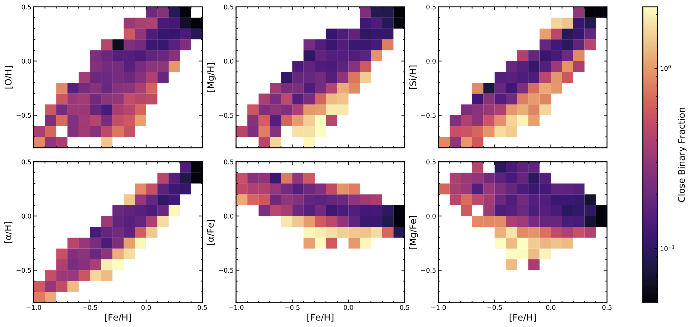

About Me
Education
B.S. in Physics, Mississippi State University, 2016
M.S. in Physics, University of Pittsburgh, 2018
(anticipated) Ph.D. in Physics, University of Pittsburgh, 2022
Research Interests
Stellar multiplicity and its effects on the stellar lifecycle--how it affects 1) stellar formation, 2) the stars during their MS/RGB lives, 3) the stars' deaths, and all things between!
Publications
You can find a current list of my publications on ADS here or by clicking the icon on the previous page.
Research
A set of spectra for a typical star in APOGEE DR14.
Stellar Multiplicity and Stellar Parameters in APOGEE
Within the SDSS-IV APOGEE-2 survey, my advisor Carles Badenes and I, alongside our colleagues, have looked at numerous sets of parameters and their relationships with stellar multiplicity. We accomplish this by using the sample's distribution of ΔRVmax (maximum shifts in the radial velocities, RVs) as a proxy for the occurrence of close binaries. A star that has a ΔRVmax far in excess of what can be explained by RV uncertainties can be presumed to have a short-period companion; with the high-quality spectra from APOGEE, we can study systems with periods up to 10,000 days in this manner. This method only requires that stars have 2+ visits, allowing us to keep the majority of APOGEE's sample. For reference, out of 343,888 stars in APOGEE data release 16 that pass a simple set of quality cuts, 18% have only 2 visits, 34% have 3, and 28% have 4 or more!
I've worked or am working on several sub-projects within this research topic.
- Evolution, Metallicity, and Multiplicity in DR13
- As a star progresses up the red giant branch (RGB), it grows in size, which has unfortunate implications for very short-period companions. We saw evidence for attrition of these short-period systems via trends between ΔRVmax and the stars' surface gravity log(g), shown below. We also found an anti-correlation between ΔRVmax and [Fe/H]. Our work was published in The Astrophysical Journal in Feb. 2018, and our anti-correlation was further studied and confirmed in Moe, Kratter, and Badenes 2019.
- Presentations:
- Poster at the 2019 SDSS collaboration meeting in Ensenda, Mexico.
Fig. 5 from Badenes et al. 2018.
- Stellar Multiplicity and Parameters in DR14, especially α abundances
- In this project, we compared an assortment of stellar parameters against the distribution of ΔRVmax for a selection of APOGEE DR14 dwarfs/subgiants (log(g)≥3.25). The parameters we considered included effective temperature and several elemental abundances from APOGEE DR14, as well as masses, ages, and parameters related to the stars' galactic orbital motions from Sanders & Das et al. 2018. The relationships we saw are complex and difficult to characterize without a thorough study, but one set of trends stood out above the rest. The anti-correlation with [Fe/H] was again found, but we also discovered a further anti-correlation with four α abundances, as shown in the figure below. Our work was published in Monthly Notices of the Royal Astronomical Society in Dec. 2020.
- Presentations:
- Lightning talk and poster at the 2019 SDSS collaboration meeting in Ensenda, Mexico.
- Contributed talk at the 2020 SDSS collaboration meeting in New York, USA.

Fig. 6 from Mazzola et al. 2020.
- Stellar Multiplicity and Rotation Speed vsin(i) in DR14
- Stars in close binaries suffer the consequences of stellar evolution, but they also experience tidal interactions that can have a number of effects. This can include rotational synchronization, where the orbital period and rotational periods become synchronized. We investigated the relationship between surface gravity log(g), rotation speed vsin(i), and ΔRVmax for HR-selected samples of APOGEE DR14 dwarfs and giants, finding that the extremes of the distributions are well-described by theoretical upper limits derived from a set of simple assumptions that include rotational synchronization. For our cool (Teff ≤ 6200 K) dwarfs, we also used masses and ages from the Sanders & Das et al. 2018 catalog to compare with gyrochronology relations from Barnes 2010 (gray lines), as shown in the figure below. We found that the close binary fraction is strongly correlated with vsin(i) (upper panel, blue line), but we also see that close binaries have massively faster rotation speeds for their ages than would be otherwise expected for single stars using gyrochronology. Our work has been submitted to Monthly Notices of the Royal Astronomical Society (arXiv:2110.01100).
- Presentations:
- Contributed talk at the 2021 SDSS collaboration meeting at Johns Hopkins University.

Fig. 9 from Daher et al. 2021 (in prep.).
Impact
Mentoring
I am indebted to the patience and guidance of my mentors throughout my time in graduate school, and I have done my best to pay this forward.
- Graduate Student Co-Supervision
- Spring 2021-Present: co-supervising Tori Bonidie and Travis Court in a research project comparing stellar multiplicity in the Sagittarius Stream to analog stars from the Milky Way (publication in prep.)
- Undergraduate Student Co-Supervision
- Summer 2019: co-supervised Tori Bonidie and Polina Petrov through a summer research project studying UV excess and RV variability in APOGEE stars
- Fall 2021-Present: co-supervising Jakob Bindas in a research project investigating the closest remaining companions to APOGEE Red Clump stars
- Graduate Student Peer Mentorship
- Fall 2018-Spring 2019: mentored three new graduate students through their first year in the program
- Fall 2019-Spring 2020: mentored four new graduate students
- Fall 2020-Spring 2021: mentored three new graduate students
- Fall 2020-Summer 2021: Teaching Assistant/Fellow Mentor for the Dept. of Physics and Astronomy
Equity & Inclusion
Diversity enriches science and the departments where scientific research occurs. When possible, I try to take every opportunity to foster diversity.
As an undergraduate at Mississippi State University, I participated in our local chapter of the Society of Physics Students (SPS), and I was vice president for our chapter for the 2015 spring and fall terms. I also attended the 2015 and 2016 APS Conference for Undergraduate Women in Physics (CUWiP), which were both incredible experiences for connecting me with other women in the field.
Since then, I have been a member of U. Pitt's Women and Minorities in Physics group, enabling me to participate in discussions of our department's climate and listen to the experiences of other students. I attended two workshops organized by the university in Nov. 2019: the Negotiation and Management Workshop for Women in Sciences, and the Women in Medicine and Science Forum. Both provided informative sessions as well as valuable networking experiences with female students, faculty, and adminstration. Most recently, I and several other volunteers presented several tables' worth of physics demonstrations for attendees at the 2020 CUWiP jointly hosted by U. Pitt and Carnegie Mellon University.
However, the fight for equality and diversity is far from over. I am continually dedicated to supporting the diversification of my department, all the collaborations I have joined, and astronomy at large.
Teaching
- ASTRON 0089: Stars, Galaxies, and the Cosmos (U. Pitt)
- Fall 2016: 5 recitations ~ 180 students total
- Spring 2017: 5 recitations ~ 180 students total
- Spring 2019: 1 recitation ~ 30 students total
- ASTRON 0088: Stonehenge to Hubble (U. Pitt)
- Spring 2019: 3 recitations for 2 instructors, two with ~ 30 students each and the other with ~ 50
- PHYS 0091: Conceptual Physics (U. Pitt)
- Spring 2020: 1 recitation with ~ 25 students, second half I helped all ~ 50 students (moved to online classes)
- ECE 4653/6653: Introduction to Power Electronics (Miss. State U.)
- Spring 2015: assembled lab kits, monitored students' use of lab equipment and aided in troubleshooting when primary TA was unavailable
- Spring 2016: assembled lab kits, acted as the primary TA for monitoring students' use of lab equipment and aiding in troubleshooting
Talks
Contact
Click here or the icon on the previous page to email me. Click the icons on the previous page or the links here to visit my GitHub and LinkedIn profiles.
Desk #14 Allen 300
3941 O'Hara Street
Pittsburgh, PA 15260
Send me an email if you'd like to discuss research, and we'll arrange a time to chat!